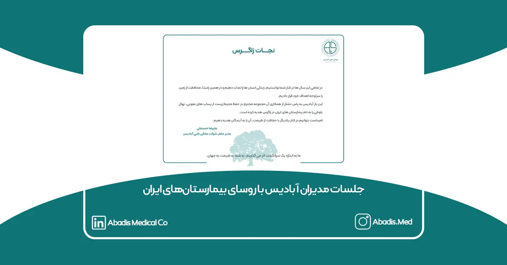

جلسات مدیران آبادیس با رؤسای بیمارستانهای ایران در راستای حفاظت از محیط زیست
امروزه گرمایش زمین یکی از بزرگترین چالشهای زیستمحیطی است که به دلیل افزایش گازهای گلخانهای ناشی از فعالیتهای انسانی مانند سوختهای فسیلی، جنگلزدایی و صنعتی شدن زندگی روزمره رخ میدهد. این پدیده منجر به تغییرات آبوهوایی گسترده، ذوب شدن یخهای قطبی، افزایش سطح دریاها و نابودی جنگلها، آتش سوزی جنگلها، خشک شدن رودها و تالابها میشود. تلاش برای حفاظت از تنوع زیستی و جنگلها، به همراه آموزش و آگاهیبخشی عمومی، میتواند نقش مهمی در کاهش اثرات منفی گرمایش زمین و تضمین آیندهای پایدار برای نسلهای آتی ایفا کند.
زاگرس، به عنوان یکی از مهمترین رشتهکوههای ایران، نقش حیاتی در تأمین منابع آبی، حفظ تنوع زیستی و پایداری اکوسیستمهای منطقهای دارد. این منطقه با چالشهای جدی نظیر جنگلزدایی، آتشسوزی جنگلها و بهرهبرداری بیرویه از منابع طبیعی روبهرو است که تهدیدی جدی برای محیط زیست و معیشت جوامع محلی محسوب میشود. نجات زاگرس نیازمند یک رویکرد جامع و هماهنگ است که شامل حفاظت از جنگلها، بازسازی اراضی تخریبشده، توسعه شیوههای کشاورزی پایدار و افزایش آگاهی عمومی درباره اهمیت این منطقه است. اقدامات موثر در این زمینه میتواند به حفظ و بهبود وضعیت زاگرس، تضمین منابع آبی و حفظ تنوع زیستی آن کمک شایانی کند.
مجموعه آبادیس حامی کارزار درخواست نجات زاگرس که توسط انجمنهای دوستدار طبیعت در تاریخ ۳۰ تیر ماه ۱۴۰۳ آغاز شده است؛ میباشد. مدیران مجموعه آبادیس و پرسنل آن از این کارزار حمایت کرده و این کارزار را امضا نمودند.
آبادیس در راستای شعار و مسئولیت اجتماعی خود با همکاری شرکت ایدهپردازان نواندیش فردا قدم بزرگی در حفظ و نجات زاگرس برداشت. شرکت مخازن طبی آبادیس به تعداد اعضای خانواده خود که بیش از 400 مرکز درمانی میباشد؛ با کاشت بلوط در روز درختکاری اثرگذاری خود را به طبیعت اثبات کرد.
این رویداد به صورت حضوری و آنلاین و با مشارکت حدود 800 نفر از علاقهمندان، کنشگران حوزه محیط زیست و نمایندگان نهاد های مختلف برگزار گردید، علاوه بر شرکت مخازن طبی آبادیس، شرکت شاتل، دیگر برندهای فعال بخش خصوصی و همچنین جمعی از هنرمندان مطرح کشور نیز به عنوان حامیان معنوی این رویداد و پروژه بزرگ کاشت بلوط در زاگرس حضور داشتند و بر اهمیت پیوند صنعت، هنر و مسئولیت اجتماعی تأکید کردند.
این مشارکت گسترده، نشاندهنده ظرفیت بالای بخش خصوصی و جامعه فرهنگی کشور در تحقق اهداف توسعه پایدار و حفاظت از سرمایههای ملی است.
برای مشاهده شناسنامه بلوطها به لینک زیر مراجعه نمایید.
مدیران مخازن طبی آبادیس به پاس همکاری با مراکز درمانی از سالهای گذشته و همچنین اهدای لوح کاشت نهال بلوط در زاگرس به نام بیمارستانهای پیشرو در کنترل عفونت به صورت حضوری با روسا و مدیران بیمارستانها دیدار کردند.
این خبر مرتبا به روز رسانی میشود.
این دیدارها مورد استقبال فراوان رؤسای بیمارستانها قرار گرفت؛ و رؤسای بیمارستانها برای همراهی و همدلی، پویش آبادیس در راستای حفظ محیط زیست و نجات زاگرس را حمایت کردند.
بیمارستان شهدای تجریش
در اولین روز از این دیدارها روز سهشنبه ۲ مرداد ۱۴۰۳، جناب آقای مهندس علیرضا حسنعلی مدیرعامل شرکت مخازن طبی آبادیس با جناب آقای دکتر سید پوژیا شجاعی ریاست محترم بیمارستان شهدای تجریش، جناب آقای دکتر محمد مهدی قیامت ریاست محترم بیمارستان ایرانمهر و جناب آقای دکتر سید فخرالدین نور محمدی مدیریت و ریاست محترم بیمارستان بهمن ملاقات کردند.
بیمارستان شهدای تجریش طی این سالها همکاری با آبادیس تا پایان سال 1403 میزان ۶۶۱،۲۵۰ لیتر آب با استفاده از کیسه ساکشن یکبار مصرف صرفه جویی داشته است. در گفتگو با جناب آقای دکتر سید پوژیا شجاعی متخصص مراقبتهای ویژه، در خصوص این همراهی در این مسیر حفظ محیط زیست پرداخته شد.
جناب آقای دکتر سید پوژیا شجاعی ریاست محترم بیمارستان شهدای تجریش پس از استقبال فراوان از همراهی در نجات زاگرس، عکس لوح را به همراه متن زیر در فضای مجازی به اشتراک گذاشتند.
مجتمع بیمارستانی شهدای تجریش علاوه بر نجات جان انسانها همیشه سعی در محافظت از زمین و ارتقا کنترل عفونت بیمارستانی داشته و در همین راستا، هم مسیر با شرکت مخازن طبی آبادیس از ورود پسابهای بیمارستانی به محیط زیست جلوگیری نموده است، این بار آبادیس توانسته گامی بزرگ با کاشتن نهال بلوطی به نام بیمارستان شهدای تجریش در حفاظت از جنگل زاگرس بردارد. امید است بتوانیم با حفاظت از محیط زیست، آن را به آیندگان هدیه دهیم.
بیمارستان ایرانمهر
بیمارستان ایرانمهر در چندین سال همکاری با آبادیس تا پایان سال ۶۷۶،۳۰۰ لیتر آب صرفه جویی کرده است. در جلسهای که مدیرعامل آبادیس با جناب آقای دکتر محمد مهدی قیامت متخصص بیهوشی مراقبتهای ویژه داشتند؛ در رابطه با این همکاری در راستای حفظ محیط زیست گفتگو شد.
جناب آقای دکتر محمد مهدی قیامت ریاست محترم بیمارستان ایرانمهر، با استقبال از این پویش و حرکت آبادیس، در همان لحظه لوح را برای پرسنل به نمایش گذاشت و عکس لوح را در فضای مجازی به اشتراک گذاشتند.
بیمارستان بهمن
بیمارستان بهمن طی سالها همکاری با آبادیس تا پایان سال 1403 میزان ۱،۰۵۲،۷۰۰ لیتر آب صرفه جویی با استفاده از کیسه ساکشن یکبار مصرف داشته است. جناب آقای دکتر سید فخرالدین نور محمدی متخصص قلب و عروق از این همکاری در راستای صرفه جویی در آب و حفظ محیط زیست رضایت خود را اعلام کردند.
همچنین جناب آقای دکتر سید فخرالدین نور محمدی مدیرعامل و ریاست محترم بیمارستان بهمن بیان کرد:” از زمان ریاست من سلامت درختان بیمارستان در محوطهی بیرونی و داخلی بیمارستان جزو برنامههای بیمارستان در راستای حفظ محیط زیست قرار گرفت و به آنها رسیدگی شد.”
بیمارستان عرفان نیایش
در روز دوم این دیدار در روز یکشنبه ۷ مرداد ۱۴۰۳، جناب آقای مهندس نوید حسنعلی معاونت بازرگانی و فروش شرکت مخازن طبی آبادیس به همراه سرپرست فروش بیمارستان عرفان نیایش آقای محسنزاده، با جناب آقای
دکتر محمد حسین بهزاد مقدم مدیرعامل محترم بیمارستان عرفان نیایش ملاقات نمودند. ایشان اظهار داشتند که مجموعه بیمارستانهای نیایش در حال حاضر بزرگترین تولیدی گل ارکیده هستند. بیمارستان عرفان نیایش در طی این چندین سال همکاری با مخازن طبی آبادیس تا پایان سال 1403میزان ۱،۰۵۴،۸۰۰ لیتر در مصرف آب با استفاده از کیسه ساکشن یکبار مصرف صرفه جویی داشته است.
شرکت امیدبخشان حیات
روز سوم از این دیدارها، در روز سه شنبه 9 مرداد 1403، مدیرعامل محترم شرکت امیدبخشان حیات جناب آقای دکتر عبدلنژاد و معاونت محترم ایشان جناب آقای مهندس خاکزاد در دفتر مرکزی آبادیس حضور بعمل رساندند. جناب آقای مهندس نوید حسنعلی معاونت بازرگانی و فروش و جناب آقای ابوالفضل حسنعلی رئیس هیئت مدیره شرکت مخازن طبی آبادیس بههمراه کارشناس فروش آقای برادران با مدیران محترم امیدبخشان حیات دیدار و جلسه داشتند. جناب آقای دکتر عبدلنژاد و جناب آقای مهندس خاکزاد از تلاش ها و حمایتهای آبادیس در راستای حفظ محیط زیست و به ویژه پویش نجات زاگرس آبادیس تحسین کردند. همچنین آنان با استقبال از این تعهد اجتماعی، ابراز امیدواری کردند که روزی فرا برسد که تمامی شرکتهای تجهیزات پزشکی با جدیت و انگیزه در انجام مسئولیت اجتماعی و حفظ محیط زیست پیش قدم و فعال باشند.
شرکت امیدبخشان حیات از زمان همکاری با مجموعه آبادیس تا پایان سال 1403 در صرفهجویی 2،989،500 لیتر آب با فرهنگسازی استفاده از کیسه ساکشن یکبار مصرف همراه آبادیس در حفظ محیط زیست شده است.
بیمارستان دی
در روز چهارشنبه ۱۰ مرداد، جناب آقای مهندس نوید حسنعلی معاونت بازرگانی و فروش شرکت مخازن طبی آبادیس با جناب آقای دکتر حمید مظاهری ریاست محترم بیمارستان دی دیدار داشتند. در طی این ملاقات حضوری از میزان ۸۰۹،۶۰۰ لیتر صرفه جویی در مصرف آب که بیمارستان دی در طی ۶ سال همکاری با آبادیس تا پایان سال 1403 و استفاده از کیسه ساکشن یکبار مصرف داشته است، صحبت شد.
بیمارستان قلب و عروق شهید رجایی
در روز شنبه ۱۳ مرداد جناب آقای مهندس نوید حسنعلی معاونت بازرگانی و فروش شرکت مخازن طبی آبادیس به انستیتو آموزشی، تحقیقاتی و درمانی قلب و عروق شهید رجایی رفتند؛ و با هیئت رئیسه بیمارستان قلب شهید رجایی جلسه ارزشمندی داشتند. در این جلسه معاونت بازرگانی و فروش آبادیس با جناب آقای دکتر فریدون نوحی ریاست محترم بیمارستان شهید رجایی، جناب آقای دکتر مجید ملکی، دکتر سید محمد مهدی پیغمبری، جناب آقای دکتر سعید افتخاری، جناب آقای دکتر رضا گل پیرا، سرکار خانم دکتر لیلا عبدالکریمی و سرکار خانم دکتر سعیده مظلومزاده دیدار داشتند. بیمارستان شهید رجایی در طی چندین سال همکاری با آبادیس میزان ۷۴۹،۸۰۰ لیتر آب تا پایان سال 1403 با استفاده از کیسه ساکشن یکبار مصرف صرفه جویی کرده است.
پیشنهاد ارزشمند کاشت هر درخت به ازای هر تخت بیمارستانی از سوی هیئت رئیسه بیمارستان قلب شهید رجایی به معاونت بازرگانی و فروش آبادیس داده شد.
مجتمع بیمارستانی امام خمینی
در روز ۱۴ مرداد جناب آقای مهندس نوید حسنعلی معاونت بازرگانی و فروش شرکت مخازن طبی آبادیس با جناب آقای دکتر سورکی مدیرعامل محترم مجتمع بیمارستانی امام خمینی دیدار داشتند.
در طی این جلسه این جلسه جناب آقای دکتر محمد علی سورکی اظهار داشتند مهمترین مسئولیت اجتماعی ما حفظ محیط زیست است؛ که بتوانیم زمین را به جای بهتری برای آیندگان تبدیل کنیم. وی در ادامه افزود در مسیر حفظ و اثرگذاری بر محیط زیست همراه آبادیس است.
مجتمع بیمارستانی امام خمینی از زمان همکاری با آبادیس میزان ۱۷۹،۸۵۰ لیتر آب تا پایان سال 1403 با استفاده از کیسه ساکشن یکبار مصرف صرفه جویی کرده است.
بیمارستان اختر
روز دوشنبه ۱۵ مرداد جناب آقای مهندس نوید حسنعلی معاونت بازرگانی و فروش شرکت مخازن طبی آبادیس به مرکز پزشکی، آموزشی و درمانی اختر رفتند؛ و با جناب آقای مهندس ابراهیم مهآبادی مدیریت محترم بیمارستان دیدار کردند.
جناب آقای مهندس ابراهیم مهآبادی در حمایت از پویش آبادیس فرمودند در مسیر حفظ محیط زیست همراه و همدل شما هستیم؛ تا زمین و محیط زیست این میراث گرانبها را به آیندگان هدیه دهیم.
بیمارستان اختر از زمان آغاز همکاریش با مجموعه آبادیس میزان ۱۲۱،۴۵۰ لیتر آب با استفاده از کیسه ساکشن یکبار مصرف صرفه جویی داشته و در راستای حفظ محیط زیست قدم برداشته است.
بیمارستان تندیس
در روز سهشنبه ۱۶ مرداد جناب آقای مهندس نوید حسنعلی معاونت بازرگانی و فروش شرکت مخازن طبی آبادیس به بیمارستان تندیس و بیمارستان جم رفتند؛ و با سرکارخانم دکتر مهری محمدی ریاست محترم بیمارستان تندیس و جناب آقای دکتر شهرام تقدیسی مدیرعامل محترم بیمارستان جم دیدار داشتند.
در طی دیداری که معاونت بازرگانی و فروش شرکت مخازن طبی آبادیس با ریاست محترم بیمارستان تندیس داشتند؛ سرکارخانم دکتر مهری محمدی از آشنایی کامل با شرکت دانش بنیان آبادیس و محصولات آن صحبت کردند؛ و ایشان اظهار داشتند بیمارستان تندیس آبادیس و پویش نجات زاگرس را در فضای مجازی دنبال میکنند و حامی آبادیس در این مسئولیت اجتماعی است.
بیمارستان تندیس از زمان همکاری با آبادیس میزان ۸۱۱،۲۳۰ لیتر آب تا پایان سال 1403 با استفاده از کیسه ساکشن یکبار مصرف صرفه جویی کرده است.
بیمارستان جم
در ملاقاتی که مهندس نوید حسنعلی به همراه سرپرست فروش بیمارستان جم خانم هاشمیان با جناب آقای دکتر شهرام تقدیسی مدیرعامل محترم بیمارستان جم داشتند؛ جناب آقای دکتر شهرام تقدیسی از پویش نجات زاگرس حمایت کردند؛ و در راستای این حمایت، اظهار داشتند که مسئولیت اجتماعی آبادیس و حفظ محیط زیست را به همهی همکاران خود و این صنعت اعلام خواهند کرد.
بیمارستان جم از زمان آغاز همکاریش با مجموعه آبادیس میزان ۳۴۵،۵۰۰ لیتر آب تا پایان سال 1403 با استفاده از کیسه ساکشن یکبار مصرف صرفه جویی داشته و در راستای حفظ محیط زیست قدم برداشته است.
بیمارستان مهر
در روز چهارشنبه ۲۴ مرداد ۱۴۰۳ معاونت بازرگانی و فروش شرکت مخازن طبی آبادیس، جناب آقای مهندس نوید حسنعلی با جناب آقای دکتر فریدون معظمی مدیرعامل محترم بیمارستان مهر و جناب آقای دکتر رهنما مدیریت محترم مجتمع بیمارستانی یاس دیدار داشتند.
جناب آقای دکتر فریدون معظمی مدیرعامل محترم بیمارستان مهر، با استقبالی بی نظیر از پویش نجات زاگرس آبادیس و حفظ محیط زیست حمایت کردند. ایشان اعلام کردند در پویش حفاظت از محیط زیست همراه و همگام با آبادیس خواهند بود؛ و اظهار داشتند این امر مهم را در هیئت مدیره و انجمن بیمارستانهای خصوصی کشور مطرح خواهند کرد و همواره پشتیبان و همراه آبادیس در مسئولیت اجتماعی آن خواهند بود.
بیمارستان مهر در طی همکاری که با شرکت دانش بنیان مخازن طبی آبادیس داشته است؛ میزان ۸۲۵،۸۵۰ لیتر آب تا پایان سال 1403 صرفه جویی داشته و در راستای حفاظت از محیط زیست همراه بوده است.
مجتمع بیمارستانی یاس
جناب آقای دکتر کاظم رهنما مدیریت محترم مجتمع بیمارستانی یاس، حامی محیط زیست و فعال در حوزه ارتقا کنترل عفونت هستند. ایشان با حمایت جدی و مشتاقانه از آبادیس در تمامی مراکزی که فعالیت کردهاند باعث ارتقا چشمگیر کنترل عفونت در مرکز طبی کودکان، فارابی، حکیم و هم اکنون در بیمارستان یاس همراه و همگام آبادیس هستند.
ایشان پیشنهادی در خصوص محاسبهگر سایت آبادیس مطرح کردند که این محاسبه گر در هر تخصصی مثل زنان و زایمان، چشم، قلب و عروق، مغز و اعصاب و … تفکیک و طراحی گردد. همچنین، همکاری برای مقالات علمی با موضوعاتی در راستای کنترل عفونت و کاهش هزینههای مراکز درمانی مطرح نمودند.
مجتمع بیمارستانی یاس از زمان آغاز همکاری با شرکت مخازن طبی آبادیس حدود ۱۸۱،۳۰۰ لیتر آب تا پایان سال 1403، با استفاده از کیسه ساکشن یکبار مصرف صرفه جویی کرده و همراه آبادیس در حفظ محیط زیست شده است.
بیمارستان نیکان اقدسیه
در روز شنبه ۲۷ مرداد مدیران شرکت مخازن طبی آبادیس مهندس علیرضا و نوید حسنعلی به همراه سرپرست فروش بیمارستان نیکان آقای برادران با جناب آقای دکتر رضا تقدیر ریاست محترم بیمارستان نیکان اقدسیه و قائم مقام جناب آقای دکتر تابش دیدار داشتند. جناب آقای دکتر رضا تقدیر از پویش نجات زاگرس آبادیس به وجد آمدند و بیان کردند به ندرت شرکتی را دیدهاند که با این سطح از تعهد و عشق به محیط زیست فعالیت کند؛ این نگرش مسئولانه و آیندهنگرانه، به واقع شایسته تقدیر است. ایشان در طی این جلسه از فعالیتهای ارزشمند مجموعه بیمارستانهای نیکان در حوادث سیل سیستان و بلوچستان و پلدختر یاد کردند و توضیحات کاملی درباره نقش برجسته این مجموعه در حوزه مسئولیت اجتماعی (CSR) ارائه دادند. جناب آقای دکتر رضا تقدیر اظهار داشتند در راستای مسئولیت اجتماعی بیمارستان نیکان و احترام به جایگاه ویژه بیماران، مجموعهای را با کاشت درخت در برنامه خود خواهند داشت. امید است آبادیس، در این مسئولیت اجتماعی و حفظ محیط زیست همراه و همگام بیمارستان نیکان باشد و تواما فعالیتهای بیشتری برای حفظ محیط زیست و نجات زمین داشته باشیم.
بیمارستان نیکان در طی این ۵ سال همکاری با شرکت مخازن طبی آبادیس میزان ۱،۰۵۳،۶۹۰ لیتر آب تا پایان سال 1403 با مصرف کیسه ساکشن یکبار مصرف آبادیس صرفه جویی کرده و در راه حفظ محیط زیست همراه شده است.
بیمارستان لاله
در روز یکشنبه ۲۸ مرداد ۱۴۰۳ جناب آقای مهندس نوید حسنعلی، معاونت بازرگانی و فروش شرکت مخازن طبی آبادیس با جناب آقای دکتر فرهاد فیروزی ریاست و هیئت مدیره محترم بیمارستان لاله دیدار داشتند. در این جلسه جناب آقای دکتر فرهاد فیروزی، سرکارخانم دکتر هلن صادقی، جناب آقای دکتر محمود مجیدیان، سرکار خانم منفرد، سرکار خانم شاندیزی، جناب آقای شریفی و جناب آقای حاج پروانه حضور داشتند. در طی این دیدار دکتر فرهاد فیروزی با استقبال فراوانی از پویش نجات زاگرس حمایت کردند و اظهار داشتند همراه و همگام آبادیس در راستای حفظ محیط زیست خواهند بود. همچنین سرکارخانم دکتر هلن صادقی با استقبال فراوان از مسئولیت اجتماعی آبادیس بیان کردند که این پویش، اثری ماندگار خواهد داشت و تا زمانی که درختان استوار و پابرجا هستند، این اقدام برای شما به عنوان یک عمل نیکو ثبت خواهد شد.
بیمارستان لاله از زمان آغاز همکاری با آبادیس میزان ۱،۰۴۹،۷۵۰ لیتر آب تا پایان سال 1403 با استفاده از کیسه ساکشن یکبار مصرف آبادیس صرفه جویی کرده است.
بیمارستان کسری
در روز دوشنبه ۵ شهریور ۱۴۰۳، جناب آقای مهندس نوید حسنعلی، معاونت بازرگانی و فروش شرکت دانشبنیان مخازن طبی آبادیس، با جناب آقای دکتر حمید عطاریان، ریاست محترم بیمارستان کسری، و سرکار خانم صادقی ناظر دارویی این بیمارستان دیدار و گفتوگو کردند.
در این جلسه که با حضور جناب آقای دکتر حمید عطاریان برگزار شد، موضوعات مختلفی از جمله همکاریهای مستمر و پروژههای مشترک در راستای حفظ محیط زیست مورد بحث و بررسی قرار گرفت.
جناب آقای دکتر حمید عطاریان و سرکار خانم صادقی با استقبال ویژه از پویش نجات زاگرس، اقدام شرکت آبادیس در کاشت درخت بلوط به نام بیمارستان کسری را گامی ارزشمند در راستای مسئولیت اجتماعی دانستند. ایشان تأکید کردند که این حرکت، نهتنها اثرات مثبتی بر محیطزیست دارد، بلکه یادگاری ماندگار برای بیمارستان کسری خواهد بود.
بیمارستان کسری از زمان آغاز همکاری با شرکت آبادیس، با استفاده از کیسههای ساکشن یکبار مصرف آبادیس موفق به صرفهجویی چشمگیر در مصرف آب شده است. طبق آمار، تاکنون ۳۰۰،۹۵۷ لیتر آب تا پایان سال 1403 با بهرهگیری از این محصولات صرفهجویی شده است.
بیمارستان آراد
در روز سهشنبه ۶ شهریور ۱۴۰۳، جناب آقای مهندس نوید حسنعلی، معاونت بازرگانی و فروش شرکت دانشبنیان مخازن طبی آبادیس، با جناب آقای دکتر مجید مشگ گو، ریاست محترم بیمارستان آراد، دیدار کردند. در این نشست صمیمانه، همکاریهای مشترک در حوزه محیط زیست و مسئولیت اجتماعی مورد بحث و بررسی قرار گرفت.
در این جلسه، جناب آقای دکتر مجید مشگ گو با حمایت ویژه از پویش نجات زاگرس، اقدام شرکت آبادیس در کاشت درخت بلوط به نام بیمارستان آراد را ستودند. ایشان اظهار داشتند:
“این اقدام ارزشمند نه تنها در جهت احیای طبیعت است، بلکه نمادی از مسئولیتپذیری و تعهد اجتماعی خواهد بود. درختی که به نام بیمارستان آراد کاشته شده، یادگاری ماندگار برای نسلهای آینده خواهد بود.”
بیمارستان آراد با بهرهگیری از کیسههای ساکشن یکبار مصرف آبادیس، تاکنون موفق به صرفهجویی چشمگیری در مصرف آب شده است. بر اساس گزارشها، این بیمارستان با استفاده از این محصولات، توانسته است ۲۱۱،۴۵۶ لیتر آب تا پایان سال 1403 صرفهجویی کند که گامی مؤثر در حفظ منابع طبیعی به شمار میرود.
بیمارستان گلستان
در روز پنجشنبه، 13 دی ماه سال 1403، ساعت 10:30 صبح، جناب آقای مهندس نوید حسنعلی، معاونت بازرگانی و فروش شرکت مخازن طبی آبادیس به همراه آقای محسن زاده، سرپرست فروش بیمارستان گلستان، با جناب آقای دکتر نهیان مرادی گهرت، رئیس محترم بیمارستان گلستان دیدار داشتند. در این جلسه، جناب آقای دکتر نهیان مرادی گهرت از این مسئولیت اجتماعی، پویش نجات زاگرس استقبال کردند و آمادگی خود را برای همراهی در این پویش اعلام نمودند. ایشان همچنین در خصوص چالشهای موجود در صنعت تجهیزات پزشکی و روند پرداخت معوقات، نکات مهمی مطرح کردند. دکتر مرادی تاکید داشتند که مطالبات شرکتهای تجهیزات پزشکی، پس از توافقهای صورتگرفته، به نوعی «حقالناس» به حساب میآید و باید در زمان تعیینشده پرداخت گردد. امید است که تمامی مسئولین، مدیران و روسای مراکز درمانی با توجه به این دیدگاه، در تعامل با تأمینکنندگان خود رویکردی سالم و تاثیرگذار داشته باشند.
بیمارستان گلستان از آغاز همکاری خود با شرکت مخازن طبی آبادیس میزان 144,305 لیتر آب تا پایان سال 1403 با مصرف کیسه ساکشن یکبار مصرف آبادیس صرفه جویی کرده و در راه حفظ محیط زیست همراه آبادیس شده است.
بیمارستان چمران
در روز چهارشنبه، 19 دی ماه ۱۴۰۳، جناب آقای مهندس نوید حسنعلی، معاونت بازرگانی و فروش شرکت مخازن طبی آبادیس اولین و بزرگترین تولیدکننده کیسه ساکشن یکبار مصرف در ایران، با جناب آقای دکتر علیرضا رنجبر نائینی، ریاست محترم بیمارستان چمران، دیدار کردند.
این جلسه با استقبال گرم جناب آقای دکتر علیرضا رنجبر نائینی از عملکرد شرکت آبادیس در حوزه مسئولیت اجتماعی همراه بود. ایشان ضمن ابراز رضایت از ورود محصولات آبادیس به بیمارستان چمران، به تأثیرات مثبت کیسه ساکشن یکبار مصرف در ارتقای کیفیت خدمات ارائهشده به بیماران اشاره کردند. یکی از نکات تأملبرانگیز این دیدار، صحبت الهامبخش جناب آقای دکتر علیرضا رنجبر نائینی درباره آبادیس بود؛ ایشان اظهار کردند:
قدر داشتههای خود را تا زمانی که از دست ندهیم نمیدانیم؛ آبادیس از آن شرکتهایی است که باید همیشه قدر بودنش را دانست.
آبادیس نه تنها در عرصه تولید پیشتاز است، بلکه با اقدامات اجتماعی همچون کاشت درخت در منطقه زاگرس به پاس قدردانی از مشتریان خود، نقش خود را در حفاظت از محیط زیست نیز ایفا میکند.
بیمارستان چمران در طی چندین سال همکاری با شرکت مخازن طبی آبادیس میزان 290,625 لیتر آب تا پایان سال 1403 با مصرف کیسه ساکشن یکبار مصرف آبادیس صرفه جویی کرده و در راه حفظ محیط زیست همراه شده است.
مرکز طبی کودکان
در روز سهشنبه، ۲ بهمن ۱۴۰۳، دیداری صمیمانه با جناب آقای دکتر روح اله شیرزادی، ریاست محترم مرکز طبی کودکان، برگزار شد. در این دیدار که با حضور معاونت بازرگانی و فروش مجموعه آبادیس، جناب آقای نوید حسنعلی انجام شد؛ جناب آقای دکتر روح اله شیرزادی از تلاشهای شرکت آبادیس در ارائه محصولات باکیفیت و تعهد به خدمات برجسته، علیرغم شرایط اقتصادی کنونی، قدردانی کردند. دکتر روح اله شیرزادی با اشاره به نقش تأثیرگذار آبادیس در حوزه تجهیزات پزشکی، این شرکت را نمونهای از تعهد به کیفیت و پیشرفت در این صنعت دانستند.
همچنین، از اقدامات محیطزیستی شرکت آبادیس، نظیر کاشت درخت و حمایت از محیطزیست، تقدیر ویژهای به عمل آوردند و بر اهمیت ادامه و گسترش این فعالیتها تأکید کردند.
در این جلسه، سرکار خانم اسفندیاری مسئول کنترل عفونت مرکز نیز حضور داشتند و به نقش مؤثر محصولات آبادیس در کنترل عفونت و تسهیل کار نیروهای خدماتی اشاره کردند. ایشان خاطرنشان کردند که با توجه به کمبود نیروی انسانی، این محصولات توانستهاند بهعنوان راهکاری کاربردی و مؤثر، کمک شایانی به مراکز درمانی ارائه دهند.
مرکز طبی کودکان از آغاز همکاری خود با شرکت مخازن طبی آبادیس میزان ۷۳۳،۷۰۰ لیتر آب تا پایان سال 1403 با مصرف کیسه ساکشن یکبار مصرف آبادیس صرفه جویی کرده و در راه حفظ محیط زیست همراه آبادیس شده است.
بیمارستان میلاد ارومیه
در روز چهارشنبه ۱۷ بهمن ۱۴۰۳، جلسهای با حضور جناب آقای دکتر کامران جمشیدی، مدیرعامل محترم بیمارستان میلاد ارومیه، و آقای نوید حسنعلی، معاونت بازرگانی و فروش شرکت دانشبنیان مخازن طبی آبادیس برگزار شد.
در این نشست، جناب آقای دکتر کامران جمشیدی که از مشتریان قدیمی آبادیس هستند، ضمن تقدیر از اقدامات مسئولیت اجتماعی این شرکت در حمایت از حفاظت از زاگرس، تأکید کردند که آبادیس پیشرو در کنترل عفونت بیمارستانی است.
بیمارستان میلاد ارومیه بهعنوان یکی از بیمارستانهای هوشمند غرب کشور، همواره در استفاده از فناوریهای پیشرفته پزشکی پیشگام بوده است. دکتر جمشیدی نیز با بهکارگیری نرمافزارهای مدیریتی مدرن، نقش بسزایی در ارتقای کیفیت خدمات درمانی و مدیریت بیمارستانی این مرکز داشتهاند.
شرکت دانشبنیان مخازن طبی آبادیس همچنان بر ارائه راهکارهای نوین در حوزه کنترل عفونت بیمارستانی تأکید دارد و همکاری با مراکز درمانی پیشرو را یکی از اولویتهای اصلی خود میداند. این تعاملات، گامی مؤثر در بهبود سطح بهداشت بیمارستانی و کاهش عفونتهای ناشی از تجهیزات سنتی به شمار میرود.
اتحادیه تولیدکنندگان و صادرکنندگان تجهیزات پزشکی ایران
در بهمنماه سال ۱۴۰۳، بهمنظور تقویت تعاملات صنعت تجهیزات پزشکی و تحقق مسئولیتهای اجتماعی شرکتهای فعال در این حوزه، مدیران شرکت مخازن طبی آبادیس با اعضای محترم اتحادیه تولیدکنندگان و صادرکنندگان تجهیزات پزشکی ایران دیدار و گفتوگو کردند.
در جریان این نشست، شرکت آبادیس با اهدای شناسنامه رسمی نهال بلوط کاشتهشده در زاگرس به نمایندگان اتحادیه، از مشارکت خود در پروژهی زیستمحیطی «هزار درخت بلوط، هزار امید برای نجات زاگرس» رونمایی کرد. این پروژه با هدف حفاظت از منابع طبیعی، تقویت پوشش گیاهی زاگرس و مشارکت در مقابله با بحرانهای محیطزیستی، در دستور کار واحد مسئولیت اجتماعی شرکت قرار گرفته است.
در ادامه این دیدار، آقای مهندس عبدالرضا یعقوبزاده (رئیس هیئتمدیره اتحادیه) و آقای مهندس محمدرضا کمپانی (نایبرئیس اول هیئتمدیره)، ضمن قدردانی از این اقدام ارزشمند شرکت آبادیس، بر اهمیت حضور شرکتهای دانشبنیان در عرصه توسعه پایدار، تولید ملی و حفظ محیط زیست تأکید کردند.
شرکت مخازن طبی آبادیس، بهعنوان یکی از بزرگترین تولیدکنندگان کیسههای ساکشن یکبارمصرف و دیگر تجهیزات پزشکی مصرفی در منطقه، همواره تلاش داشته است تا در کنار ارائه محصولات با کیفیت و صادراتمحور، در حوزه مسئولیتهای اجتماعی نیز نقشآفرینی مؤثری ایفا کند.
بیمارستان باهنر
در نخستین دیدار از سلسله جلسات خانواده سبز آبادیس در سال ۱۴۰۴، در روز سهشنبه ۲۶ فروردین، جمعی از مدیران شرکت مخازن طبی آبادیس با حضور در بیمارستان فرهنگیان شهید باهنر، با جناب آقای دکتر رمضان محسنپور، ریاست محترم بیمارستان، دیدار کردند.
در این جلسه، جناب آقای نوید حسنعلی معاون بازرگانی و فروش آبادیس، به همراه آقای امیر محسنزاده کارشناس فروش از طرف شرکت آبادیس حضور داشتند. همچنین آقای گراوند (مترون بیمارستان)، آقای داوطلب (مدیر مالی بیمارستان)، آقای میرحکی (مشاور ریاست بیمارستان)، استاد رحمانی (مسئول IPP بیمارستان) و آقای کریستین (کارمند سفارت رومانی) در این دیدار شرکت کردند.
در این مراسم، لوح تقدیری به پاس همراهی و عضویت در خانواده سبز آبادیس و مشارکت در طرح کاشت درختان بلوط در زاگرس به جناب دکتر محسنپور تقدیم شد.
دکتر رمضان محسنپور ضمن تقدیر از این اقدام زیستمحیطی ارزشمند، بر اهمیت حفظ محیط زیست و حمایت از اقلیم زاگرس تأکید کردند و اعلام نمودند که محیط زیست همواره یکی از اولویتهای ایشان و مجموعه بیمارستان شهید باهنر بوده است. ایشان همچنین به برخی از فعالیتهای محیطزیستی خود در مناطق جنگلی اشاره کردند و بر استمرار حمایت خود از مسئولیتهای اجتماعی تأکید داشتند.
بیمارستان فرهنگیان شهید باهنر از آغاز همکاری خود با شرکت مخازن طبی آبادیس میزان 225،180 لیتر آب تا پایان سال 1403 با مصرف کیسه ساکشن یکبار مصرف آبادیس صرفه جویی کرده و در راه حفظ محیط زیست همراه آبادیس شده است.
بیمارستان آتیه
در روز دوشنبه، 29 اردیبهشت ماه ۱۴۰4، جناب آقای مهندس نوید حسنعلی، معاونت بازرگانی و فروش شرکت مخازن طبی آبادیس اولین و بزرگترین تولیدکننده کیسه ساکشن یکبار مصرف در ایران، با جناب آقای دکتر غلامحسین کاظمیان، مدیرعامل محترم بیمارستان آتیه، دیدار کردند.
در این نشست صمیمانه، ضمن قدردانی از عملکرد مؤثر بیمارستان آتیه در حوزه کنترل عفونت، استفاده از محصولات بهروز و ارتقاء استانداردهای بهداشتی، درباره راهکارهای تقویت همکاریهای فیمابین بحث و تبادل نظر شد.
همچنین در جریان این دیدار، به رسم پاسداشت مسئولیت اجتماعی و بهمنظور ارج نهادن به همراهی مجموعه آتیه در ارتقای نظام سلامت کشور، شناسنامه کاشت یک نهال بلوط به نام بیمارستان آتیه در زاگرس، به مدیرعامل محترم این بیمارستان تقدیم شد. این اقدام، بخشی از پروژه زیستمحیطی «هزار درخت بلوط، هزار امید برای نجات زاگرس» است که از سوی شرکت آبادیس در مناطق در معرض خطر زاگرس در حال اجراست.
بیمارستان آتیه از آغاز همکاری خود با شرکت مخازن طبی آبادیس میزان 261،112 لیتر آب تا پایان سال 1403 با مصرف کیسه ساکشن یکبار مصرف آبادیس صرفه جویی کرده و در راه حفظ محیط زیست همراه آبادیس شده است.
انجمن تولیدکنندگان و صادرکنندگان تجهیزات و ملزومات پزشکی، دندانپزشکی، آزمایشگاهی و دارویی
در تاریخ ۶ خرداد ۱۴۰۳، نهمین جلسه هیئتمدیره انجمن تولیدکنندگان و صادرکنندگان تجهیزات، ملزومات پزشکی، دندانپزشکی، آزمایشگاهی و دارویی ایران برگزار شد. در این جلسه، مدیران شرکت دانشبنیان مخازن طبی آبادیس به همراه شرکت ویراکام، به دعوت انجمن در این نشست حضور یافتند.
در بخش نخست این جلسه، تیم ویراکام به معرفی ظرفیتهای نرمافزار هوش تجاری (BI) در صنعت تجهیزات پزشکی پرداختند و راهکارهای مبتنی بر داده را برای ارتقاء بهرهوری و تصمیمسازی هوشمند در تشکلها و مجموعههای تولیدی ارائه کردند. این ارائه مورد استقبال اعضای هیئتمدیره قرار گرفت و مقرر شد توضیحات تکمیلی در اختیار دیگر اعضای انجمن نیز قرار گیرد.
در ادامه، از اقدام ارزشمند شرکت آبادیس در حوزه مسئولیت اجتماعی نیز تقدیر شد. این شرکت با اجرای طرح «هزار درخت بلوط برای زاگرس» و کاشت درختان بلوط به نام تشکلها و انجمنهای فعال حوزه سلامت، گامی تأثیرگذار در حمایت از محیط زیست و احیای جنگلهای زاگرس برداشته است.
این حرکت ابتکاری، که به همت مدیران مجموعه و بهویژه مهندس نوید حسنعلی اجرا شده، به عنوان نمونهای موفق از پیوند میان صنعت سلامت و محیط زیست، مورد تحسین اعضای هیئتمدیره انجمن قرار گرفت.
جلسه با حضور چهرههای شاخصی از جمله جناب آقای دکتر جلیل سعیدلو، سرکار خانم مهندس مریم قاسمی، جناب آقای مهندس عبدالله مستعلیپور، سرکار خانم مهندس الهه یزدانی، جناب آقای براتی، جناب آقای مهندس محمود مفیدی شمیرانی و جناب آقای واحدی برگزار گردید؛ در پایان جلسه نیز، برنامهریزی برای برگزاری مجمع عمومی انجمن در ۲۷ خرداد و همچنین نمایشگاه ایرانمد ۱۴۰۳ (از ۱۷ تا ۲۰ مهرماه) بررسی و پیگیری شد.